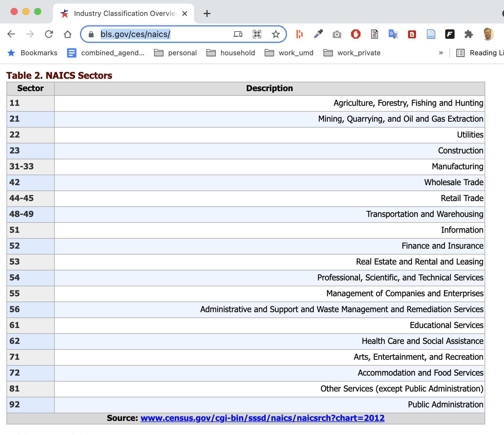
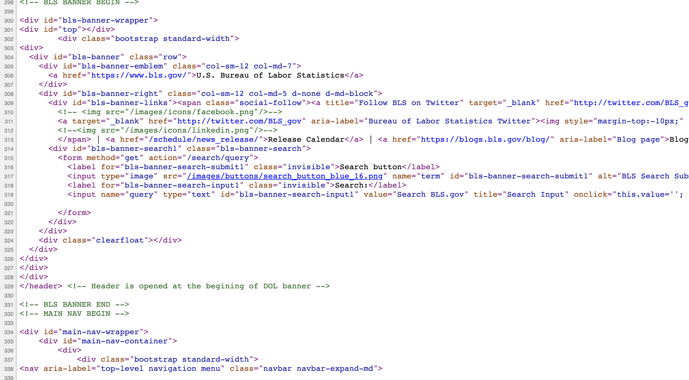
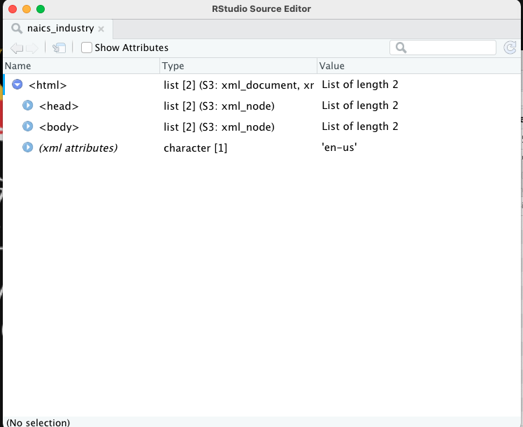
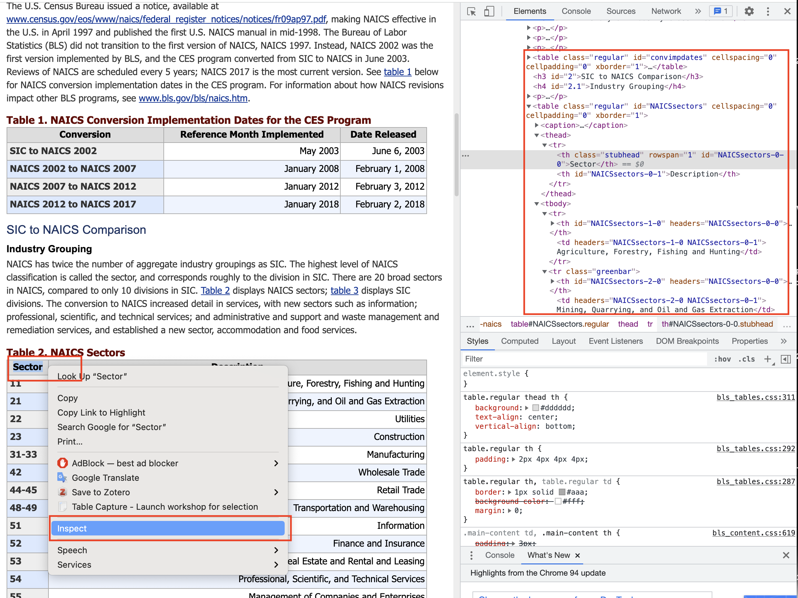
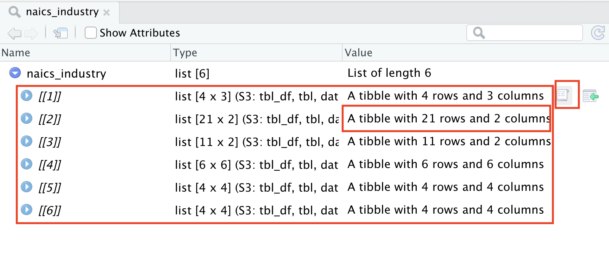
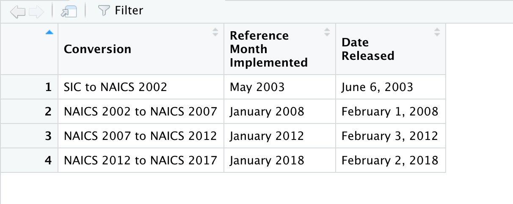
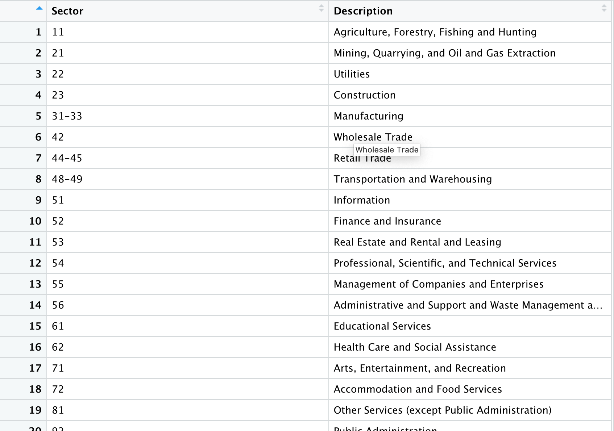

Chapter 15 Scraping data with Rvest
Sometimes, governments put data online on a page or in a searchable database. And when you ask them for a copy of the data underneath the website, they say no.
Why? Because they have a website. That’s it. That’s their reason. They say they don’t have to give you the data because they’ve already given you the data, never mind that they haven’t given to you in a form you can actually load into R with ease.
Lucky for us, there’s a way for us to write code to get data even when an agency hasn’t made it easy: webscraping.
One of the most powerful tools you can learn as a data journalist is how to scrape data from the web. Scraping is the process of programming a computer to act like a human that opens a web browser, goes to a website, ingests the HTML from that website into R and turns it into data.
The degree of difficulty here goes from “Easy” to “So Hard You Want To Throw Your Laptop Out A Window.” And the curve between the two can be steep. You can learn how to scrape “Easy” in a day. The hard ones take a little more time, but it’s often well worth the effort because it lets you get stories you couldn’t get without it.
In this chapter, we’ll show you an easy one. And in the next chapter, we’ll so you a moderately harder one.
Let’s start easy.
We’re going to use a library called rvest, which you can install it the same way we’ve done all installs: go to the console and install.packages("rvest").
Like so many R package names, rvest is a bad pun. You’re supposed to read it to sound like “harvest,” as in “harvesting” information from a website the same way you’d harvest crops in a field.
We’ll load these packages first:
library(rvest)##
## Attaching package: 'rvest'## The following object is masked from 'package:readr':
##
## guess_encodinglibrary(tidyverse)
library(janitor)For this example, we’re going to work on loading a simple table of data from the Bureau of Labor Statistics. This is a table of industry sectors (each with a two-digit NAICS code) that we could make use of in our analysis of PPP loan data.
Recall that our PPP loan data has six-digit NAICS codes for each industry, which allows us to identify the industry for each loan. For example 212221 is the code for “Gold Mining Industry.”
A six-digit NAICS code is the most specific. As we remove numbers from the right to create five-digit, four-digit, three-digit and two-digit codes, the industries they represent get broader. Here’s an example:
- 212221 - Gold Mining Industry
- 2122 - Metal Ore Mining Industry (which includes gold mining and things like silver mining, iron mining and copper mining)
- 21 - Mining, Quarrying, and Oil and Gas Extraction Industry (which contains the metal mining industries mentioned above, but also oil drilling, coal mining and more).
It might be useful to have a lookup table of those top-level, two-digit NAICS codes (also called sector codes) for our analysis, to help us answer questions about what specific top-level industries got loans. L
Let’s suppose we can’t find a table like that for download, but we do see a version on the BLS website at this URL: https://www.bls.gov/ces/naics/.
 We could get this table into R with the following manual steps: highlighting the text, copying it into Excel, saving it as a csv, and reading it into R.
Or, we could write a few lines of webscraping code to have R do that for us!
In this simple example, it’s probably faster to do it manually than have R do it for us. And this table is unlikely to change much in the future.
Why would we ever write code to grab a single table? There’s several reasons:
- Our methods are transparent. If a colleague wants to run our code from scratch to factcheck our work, they don’t need to repeat the manual steps, which are harder to document than writing code.
- Let’s suppose we wanted to grab the same table every day, to monitor for changes (like, say, a table on a health department website that has COVID case numbers that update every day). Writing a script once, and pressing a single button every day is going to be much more efficient than doing this manually every day.
- If we’re doing it manually, we’re more likely to make a mistake, like maybe failing to copy every row from the whole table.
- It’s good practice to prepare us to do more complex scraping jobs. As we’ll see in the next chapter, if we ever want to grab the same table from hundreds of pages, writing code is much faster and easier than going to a hundred different pages ourselves and downloading data.
So, to scrape, the first thing we need to do is start with the URL. Let’s store it as an object called naics_url.
naics_url <- "https://www.bls.gov/ces/naics/"When we go to the web page, we can see a nicely-designed page that contains our information.
But what we really care about, for our purposes, is the html code that creates that page.
In our web browser, if we right-click anywhere on the page and select “view source” from the popup menu, we can see the source code. Or you can just copy this into Google Chrome: view-source:https://www.bls.gov/ces/naics/.
Here’s a picture of what some of the source code looks like.

We’ll use those HTML tags – things like <div> and <a> and <table> – to grab the info we need.
Okay, step 1.
Let’s write a bit of code to tell R to go to the URL for the page and ingest all of that HTML code. In the code below, we’re starting with our URL and using the read_html() function from rvest to ingest all of the page html, storing it as an object called naics_industry.
# read in the html
naics_industry <- naics_url %>%
read_html()
# display the html below
naics_industry## {html_document}
## <html lang="en-us">
## [1] <head>\n<meta http-equiv="Content-Type" content="text/html; charset=UTF-8 ...
## [2] <body class="layout-fixed">\n\t\t\t\t<section aria-label="content"><!-- P ...If you’re running this code in R Studio, in our environment window at right, you’ll see naics_industry as a “list of 2.”
This is not a dataframe, it’s a different type of data structure a “nested list.”
If we click on the name “naics_industry” in our environment window, we can see that it’s pulled in the html and shown us the general page structure. Nested within the <html> tag is the <head> and <body>, the two fundamental sections of most web pages. We’re going to pull information out of the <body> tag in a bit.

Now, our task is to just pull out the section of the html that contains the information we need.
But which part do we need from that mess of html code? To figure that out, we can go back to the page in a web browser like chrome, and use built in developer tools to “inspect” the html code underlying the page.
On the page, find the data we want to grab – “Table 2. NAICS Sectors” - and right click on the word “Sector” in the column header of the table. That will bring up a dropdown menu. Select “Inspect,” which will pop up a window called the “element inspector” that shows us where different elements on the page are located, what html tags created those elements, and other info.

The entire table that we want of naics sectors is actually contained inside an html <table>. It has a header row <thead> that contains the column names and a <tbody> that contains one row <tr> per industry sector code.
Because it’s inside of a table, and not some other kind of element (like a <div>), rvest has a special function for easily extracting and converting html tables, called html_table(). This function extracts all six html tables on the page, only one of which we actually want
# read in the html and extract all the tables
naics_industry <- naics_url %>%
read_html() %>%
html_table()
# display the tables below
naics_industry## [[1]]
## # A tibble: 4 x 3
## Conversion `Reference Month Implemented` `Date Released`
## <chr> <chr> <chr>
## 1 SIC to NAICS 2002 May 2003 June 6, 2003
## 2 NAICS 2002 to NAICS 2007 January 2008 February 1, 2008
## 3 NAICS 2007 to NAICS 2012 January 2012 February 3, 2012
## 4 NAICS 2012 to NAICS 2017 January 2018 February 2, 2018
##
## [[2]]
## # A tibble: 21 x 2
## Sector Description
## <chr> <chr>
## 1 11 Agriculture, Forestry, Fishing and Hunting
## 2 21 Mining, Quarrying, and Oil and Gas Extraction
## 3 22 Utilities
## 4 23 Construction
## 5 31-33 Manufacturing
## 6 42 Wholesale Trade
## 7 44-45 Retail Trade
## 8 48-49 Transportation and Warehousing
## 9 51 Information
## 10 52 Finance and Insurance
## # … with 11 more rows
##
## [[3]]
## # A tibble: 11 x 2
## Division Description
## <chr> <chr>
## 1 A Agriculture, Forestry, And Fishing
## 2 B Mining
## 3 C Construction
## 4 D Manufacturing
## 5 E Transportation, Communications, Electric, Ga…
## 6 F Wholesale Trade
## 7 G Retail Trade
## 8 H Finance, Insurance, And Real Estate
## 9 I Services
## 10 J Public Administration
## 11 Source: www.osha.gov/pls/imis/… Source: www.osha.gov/pls/imis/sic_manual.html
##
## [[4]]
## # A tibble: 6 x 6
## SIC SIC SIC NAICS NAICS NAICS
## <chr> <chr> <chr> <chr> <chr> <chr>
## 1 "Level" "Code1" "Example2" Level Code1 Example2
## 2 "Division" "Alpha" "D" Sector XX 31
## 3 "Major Group" "XX" "20" Subsector XXX 311
## 4 "Industry Group" "XXX" "203" Industry Group XXXX 3114
## 5 "Industry" "XXXX" "2037" NAICS Industry XXXXX 31141
## 6 "" "" "" U.S. Industry XXXXXX 311411
##
## [[5]]
## # A tibble: 4 x 4
## Positions `Example Value` `Field Name` `All Possible Values`
## <chr> <chr> <chr> <chr>
## 1 1-2 CE Survey Abbreviation CE
## 2 3 U Seasonal Adjustment Code S,U
## 3 4-11 31335311 Industry Code 00000000 through 90932999
## 4 12-13 01 Data Type Code 01 through 99
##
## [[6]]
## # A tibble: 4 x 4
## Positions `Example Value` `Field Name` `All Possible Values`
## <chr> <chr> <chr> <chr>
## 1 1-2 EE Survey Abbreviation EE
## 2 3 S Seasonal Adjustment Code S,U
## 3 4-9 000000 Industry Code 000000 through 959000
## 4 10-11 01 Data Type Code 01 through 83In the environment window at right, look at naics_industry. Note that it’s now a “list of 6.”
Click on it to open it up. It should look like this.
 This gets a little complicated, but what you’re seeing here is a nested list that contains six different data frames – also called tibbles – one for each table that exists on the web page we scraped.
They’re numbered 1 to 6. The first 1 has 4 rows and 3 columns, the second has 21 rows and 2 columns, and so on.
To examine what’s in each dataframe, mouse over the right edge (next to the word columns) on each row, and click the little scroll icon. The icon will be hidden until you mouse over it.
Click on the scroll icon for the first dataframe examine it.

That’s not the one we want!
Let’s try clicking on the scroll icon for row 2.

That’s more like it! So, all we need to do now is to store that single dataframe as an object, and get rid of the rest. We can do that with this code, which says "keep only the second dataframe from our nested list. If we wanted to keep the third one, we’d change the number 2 to number 3.
# Read in all html from table, store all tables on page as nested list of dataframes.
naics_industry <- naics_url %>%
read_html() %>%
html_table()
# Just keep the second dataframe in our list
naics_industry <- naics_industry[[2]]
# show the dataframe
naics_industry## # A tibble: 21 x 2
## Sector Description
## <chr> <chr>
## 1 11 Agriculture, Forestry, Fishing and Hunting
## 2 21 Mining, Quarrying, and Oil and Gas Extraction
## 3 22 Utilities
## 4 23 Construction
## 5 31-33 Manufacturing
## 6 42 Wholesale Trade
## 7 44-45 Retail Trade
## 8 48-49 Transportation and Warehousing
## 9 51 Information
## 10 52 Finance and Insurance
## # … with 11 more rowsWe now have a proper dataframe.
From here, we can do a little light cleaning. Let’s use clean_names() to standardize the column names. Then let’s use slice() to remove the last row – row number 21 – which contains source information that will complicate our use of this table later.
# Read in all html from table, store all tables on page as nested list of dataframes.
naics_industry <- naics_url %>%
read_html() %>%
html_table()
# Just keep the second dataframe in our list, standardize column headers, remove last row
naics_industry <- naics_industry[[2]] %>%
clean_names() %>%
slice(-21)
# show the dataframe
naics_industry## # A tibble: 20 x 2
## sector description
## <chr> <chr>
## 1 11 Agriculture, Forestry, Fishing and Hunting
## 2 21 Mining, Quarrying, and Oil and Gas Extraction
## 3 22 Utilities
## 4 23 Construction
## 5 31-33 Manufacturing
## 6 42 Wholesale Trade
## 7 44-45 Retail Trade
## 8 48-49 Transportation and Warehousing
## 9 51 Information
## 10 52 Finance and Insurance
## 11 53 Real Estate and Rental and Leasing
## 12 54 Professional, Scientific, and Technical Services
## 13 55 Management of Companies and Enterprises
## 14 56 Administrative and Support and Waste Management and Remediation Servi…
## 15 61 Educational Services
## 16 62 Health Care and Social Assistance
## 17 71 Arts, Entertainment, and Recreation
## 18 72 Accommodation and Food Services
## 19 81 Other Services (except Public Administration)
## 20 92 Public AdministrationAnd there we go. We now have a nice tidy dataframe of NAICS sector codes.
In the next chapter, we’ll look at a more complicated example.